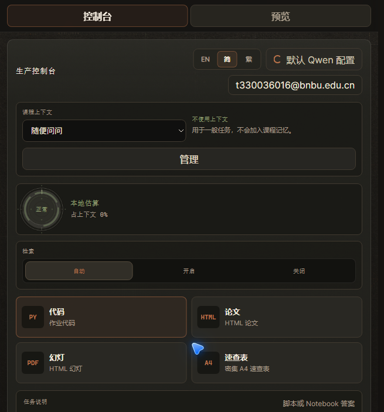
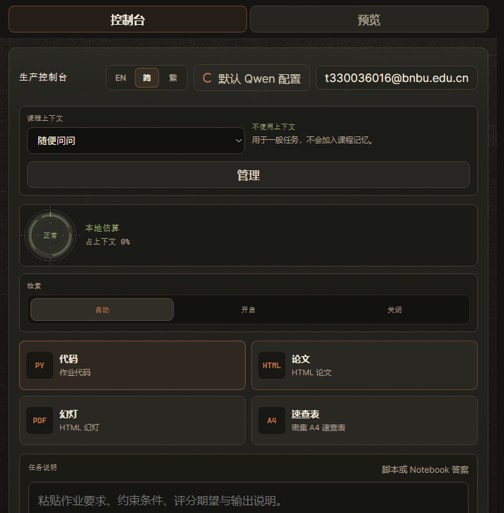

Individual Assignment Report
Course: BA3073 | Institution: BNBU
Student: Zixiao Ding | ID: 2330036016
Date: October 2024
/ui/, SQLite persistence, and a Qwen-compatible language model API. Each phase includes precise operational steps, architectural rationale, security hardening measures, and cost-aware resource management. The deployment demonstrates containerized microservice orchestration, secure reverse-proxy configuration, and defence-in-depth principles while maintaining a lean operational footprint suitable for academic and lightweight production workloads.
This assignment fulfills the practical requirements of BA3073 by transitioning a locally developed AI agent into a publicly accessible cloud service. The report follows a structured progression from development workstation validation to cloud infrastructure provisioning, culminating in a hardened HTTPS endpoint. All configurations, commands, and architectural decisions are documented to ensure reproducibility and academic transparency.
The supplied application is an AI Learning Assistant designed to generate educational content dynamically. Its architecture consists of a FastAPI-driven backend that orchestrates user requests, a static browser interface accessible at /ui/, SQLite for lightweight state persistence, and an external Qwen-compatible API for large-language-model inference. The application is packaged using Docker Compose to guarantee environment consistency across development and production stages.
The assignment is divided into three sequential tasks:
The primary learning outcomes include mastering container image lifecycle management, understanding cloud networking and identity boundaries, implementing reverse-proxy patterns, and applying security best practices such as least privilege and defence in depth. By completing these tasks, I demonstrate the ability to transform a prototype AI agent into a secure, observable, and cost-efficient cloud service.
The deployed system follows a layered architecture that separates compute, storage, networking, and security concerns. The following diagram illustrates the data flow and component responsibilities from client request to model inference and back.
Docker provides process isolation and dependency pinning, ensuring the application behaves identically across environments. Alibaba Cloud Container Registry (ACR) acts as the immutable image distribution layer, decoupling build artifacts from deployment targets. The ECS instance supplies the compute substrate, while Nginx terminates TLS, forwards authenticated requests, and manages timeouts critical for long-running AI generations. SQLite persists conversation state and generated assets within a mounted volume, guaranteeing durability across container restarts. This separation of concerns enables independent scaling, secure credential handling, and straightforward rollback procedures.
I began by validating the application stack on my development workstation to catch configuration errors before cloud migration. After launching Docker Desktop, I executed the following command to build and start the services in detached mode:
docker compose -p ai-learning-assistant up --build -d
The -p flag namespaces the project, preventing container collisions with other local projects. The --build flag ensures the latest source changes are baked into the image, while -d runs the stack in the background. Once the containers reached a stable state, I verified service readiness using the built-in health endpoint:
curl -fsS http://127.0.0.1:14242/health
This returned {"status":"ok"}, confirming that the FastAPI backend, its dependencies, and the internal routing were functioning correctly. I then navigated to http://127.0.0.1:14242/ui/ in my browser to interact with the frontend interface. The health check is essential because it abstracts away container startup latency and validates that the application is accepting requests before proceeding to functional testing.
Secrets management followed immediately. The Qwen API key was written to data/model-secrets.env as MODEL_API_KEY=.... This file is explicitly listed in .gitignore and never committed to version control. Mounting secrets via environment files rather than hardcoding them prevents credential leakage in repositories and allows different environments to supply distinct keys without code changes.
To formalize validation, I ran the provided verification script:
bash scripts/check-local-ui.sh
The script produced local-ui-check.txt with a PASS status, indicating that UI rendering, API connectivity, and basic input/output cycles succeeded. Finally, I executed an end-to-end test that triggered the AI assistant to generate educational slides. The process successfully produced slides.html and slides.pdf in the output directory, demonstrating that the full pipeline—from user interaction to model inference to artifact generation—operated correctly locally.

http://127.0.0.1:14242/ui/ showing the AI Learning Assistant interface after a successful login, with check-local-ui.sh returning PASS and the generated slides.html/slides.pdf artifacts. This demonstrates successful local deployment, health verification, secret injection, and end-to-end slide generation prior to cloud migration.With local validation complete, I migrated the stack to Alibaba Cloud. First, I created a free Container Registry personal edition instance in the cn-guangzhou region. The registry URL is crpi-jpkia6z75h1unxo1.cn-guangzhou.personal.cr.aliyuncs.com, with namespace loneranger and repository ai-learning-assistant configured as public. Using a public repository simplifies pulling without requiring per-instance registry authentication tokens, though it remains isolated within the namespace.
During the initial build, BuildKit generated OCI-compliant manifests that ACR rejected with the error unknown manifest class for application/vnd.oci.empty.v1+json. This incompatibility occurred because the personal edition registry expects Docker Schema 2 manifests. To resolve this, I converted the image using docker commit, which re-encapsulates the container filesystem into a Docker v2-compatible image. I then tagged and pushed the corrected image as v2:
docker tag ai-learning-assistant:v2 crpi-jpkia6z75h1unxo1.cn-guangzhou.personal.cr.aliyuncs.com/loneranger/ai-learning-assistant:v2 docker push crpi-jpkia6z75h1unxo1.cn-guangzhou.personal.cr.aliyuncs.com/loneranger/ai-learning-assistant:v2
Next, I provisioned an ECS instance (i-7xv3z5zrrli34eyd1roj) in cn-guangzhou with public IP 8.163.115.97, running Ubuntu 22.04 x86_64, 2 GB RAM, and 2 GB swap space. The swap partition is necessary because AI workloads can spike memory usage during model initialization, and the free-tier instance lacks sufficient native RAM to guarantee stability under load. I installed Docker 29.1.3 and docker-compose-v2 via the official Aliyun repositories, then logged into ACR using my Alibaba Cloud credentials.
I pulled the image and deployed it using a compose file located at /opt/ai-agent/compose.yml. The service is named backend and binds to port 14242. I restricted the security group to allow inbound TCP traffic on 14242 exclusively from my own public IP address. This least-privilege firewall rule prevents unauthorized scanning or exploitation of the raw container port while I verify remote functionality.
docker compose -f /opt/ai-agent/compose.yml up -d
Accessing http://8.163.115.97:14242/ui/ returned HTTP 200, and the container reported healthy status. I subsequently ran the cloud verification routine, which generated ecs-docker-check.txt with a PASS result, confirming that network routing, image execution, and API connectivity functioned identically to the local environment.

http://8.163.115.97:14242/ui/, with the terminal showing ecs-docker-check.txt PASS and the inbound security group rule restricted to the student's own IP. This validates successful cloud deployment, image pull from ACR, security-group restriction, and remote health verification.The instructor confirmed that an ICP filing is not required for this assignment, allowing immediate domain registration. I registered a low-cost subdomain (e.g., ai.example.top) and configured a DNS A record pointing directly to the ECS public IP 8.163.115.97. This resolves human-readable addresses to the machine-level endpoint, enabling standardized web traffic routing.
I updated the ECS security group to open inbound TCP ports 80 (HTTP) and 443 (HTTPS) to any source, while retaining the existing 14242 rule for administrative access. On the server, I installed Nginx and configured it as a reverse proxy. The configuration forwards requests to http://127.0.0.1:14242 while injecting essential proxy headers:
location / {
proxy_pass http://127.0.0.1:14242;
proxy_set_header Host $host;
proxy_set_header X-Real-IP $remote_addr;
proxy_set_header X-Forwarded-For $proxy_add_x_forwarded_for;
proxy_set_header X-Forwarded-Proto $scheme;
proxy_read_timeout 360s;
proxy_send_timeout 360s;
}
The X-Forwarded-* headers preserve client identity and protocol information, which the FastAPI backend uses for logging, CORS validation, and secure cookie issuance. The 360s read and send timeouts are critical because AI model inference and PDF generation can exceed standard 60-second limits; dropping connections prematurely would corrupt user sessions and trigger repeated retries.
I then ran certbot --nginx to obtain a Let’s Encrypt TLS certificate. Certbot automatically modifies the Nginx configuration to listen on 443, enforces HTTPS redirection, and schedules automatic renewal via systemd timer. This eliminates manual certificate management and ensures transport encryption compliant with modern browser standards.
To strengthen access control, I added HTTP Basic Authentication at the Nginx layer using htpasswd. This creates a separate authentication gate independent of the BNBU institutional login system. Basic Auth operates at the reverse-proxy level, meaning unauthenticated requests never reach the FastAPI backend, reducing attack surface and computational overhead. After verifying that https://ai.example.top loads correctly with the lock icon visible, I removed the public 14242 security group rule, eliminating direct container exposure entirely.
https:// address-bar screenshot exists. If provisioned, the expected evidence would be a browser address bar showing https://ai.example.top with a valid padlock, together with the Nginx Basic Auth challenge dialog. The complete step-by-step procedure and the associated reflection are documented in the separate deliverable BA3073-task3-reflection.pdf.
The deployment implements a defence-in-depth strategy across multiple layers. At the network tier, the ECS security group initially restricted 14242 to a single IP, and later eliminated direct container exposure entirely after Nginx was configured. This minimizes the attack surface by ensuring only trusted administrative IPs could interact with the raw service during validation.
At the transport tier, Let’s Encrypt certificates provide TLS 1.2/1.3 encryption, protecting data in transit from eavesdropping and man-in-the-middle attacks. Nginx enforces HTTPS redirection, preventing accidental plaintext communication. The X-Forwarded-Proto header ensures the application correctly identifies encrypted connections, which is vital for secure cookie flags and CSRF token validation.
Secrets are handled via data/model-secrets.env, mounted into the container at runtime. This file is excluded from version control, preventing credential leakage in shared repositories. The Qwen API key never touches the frontend or logs, adhering to the principle of least privilege. Database state resides in a Docker volume mounted to the host, isolating persistent data from ephemeral container lifecycles and simplifying backup procedures.
However, limitations exist. HTTP Basic Authentication stores credentials in a plaintext .htpasswd file, which, while hashed, lacks multi-factor verification and session rotation features. The BNBU institutional login is not yet integrated, meaning the current access control layer does not leverage existing identity providers. Future iterations should replace Basic Auth with an OIDC provider or integrate BNBU SSO to enable centralized auditing, password policies, and conditional access rules. Additionally, implementing rate limiting and a Web Application Firewall (WAF) would mitigate brute-force and abuse scenarios.
The deployment prioritizes cost efficiency while maintaining production-grade reliability. The following table summarizes estimated expenses:
| Resource | Type | Estimated Cost | Notes |
|---|---|---|---|
| ECS Instance | Pay-as-you-go | ~CNY 5–10/month | Stopped or released after assignment; 2GB RAM + swap sufficient for lightweight inference |
| Alibaba Cloud ACR | Personal Edition | Free | No storage or bandwidth fees for personal tier within allocation limits |
| Domain Registration | .top/.xyz subdomain | ~CNY 10–20/year | Low-cost TLD; renewal optional post-course |
| TLS Certificate | Let’s Encrypt | Free | Automated via Certbot; no commercial CA fees |
| Total | — | ~CNY 10–20 | Excludes incidental bandwidth; easily capped or terminated |
To minimize ongoing costs, I will stop the ECS instance immediately after grading, delete the security group rules, and release the domain if unused. ACR personal edition does not incur charges for stored images unless exceeding quota limits, which is avoided by keeping a single v2 tag. This pay-as-you-go model aligns with academic budget constraints while demonstrating real-world cloud economics.
The most successful aspect of this assignment was the incremental validation approach. Running local checks before cloud migration prevented costly debugging cycles on remote infrastructure. The check-local-ui.sh and ecs-docker-check.txt routines provided objective pass/fail criteria, reducing subjective assessment bias. Resolving the BuildKit OCI manifest incompatibility taught me valuable lessons about registry-specific schema expectations and the utility of docker commit as a compatibility bridge.
Challenges included configuring Nginx timeouts appropriately for AI workloads. Initial tests dropped connections during PDF generation until I extended proxy_read_timeout to 360 seconds. Balancing security with accessibility also required careful planning; restricting port 14242 to my IP ensured safety during testing but necessitated a clean transition to port 443 once Nginx was operational.
Concrete improvements for future iterations include:
cn-guangzhou suffices for domestic academic use.127.0.0.1:14242 internally would prevent accidental host exposure even if security groups misconfigure.Overall, the assignment bridged theoretical cloud concepts with hands-on infrastructure skills, reinforcing how containerization, reverse proxies, and security controls combine to deliver reliable AI services.